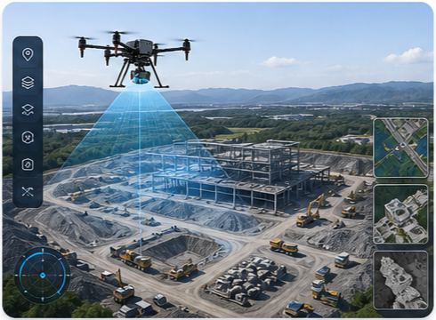
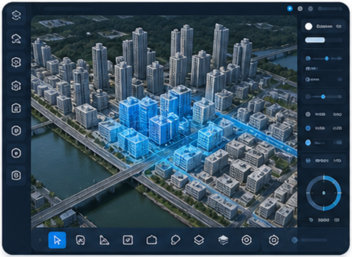
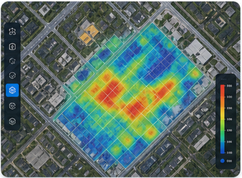
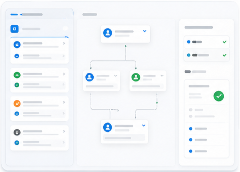
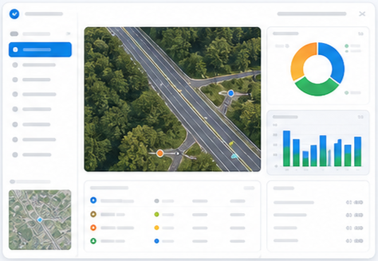
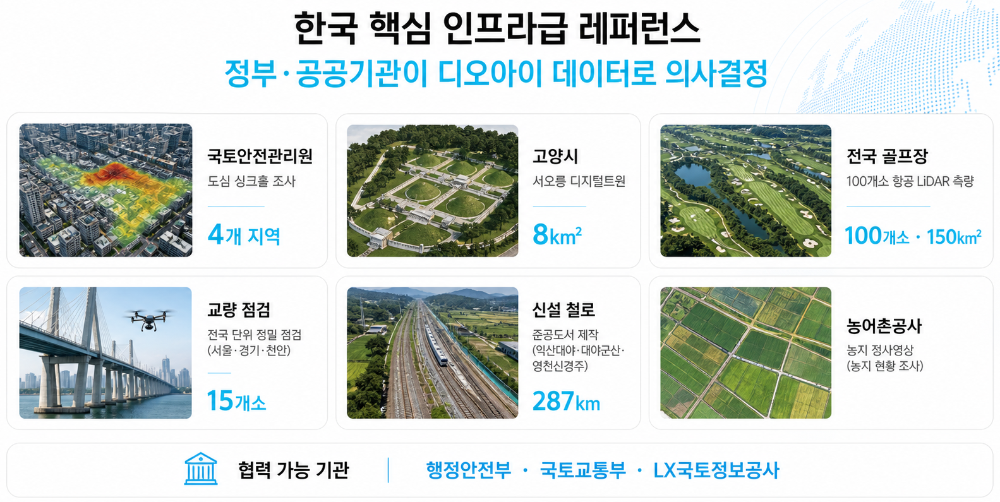

Terranium
Spatial AI Digital Twin Platform
드론 측량 데이터, 2D/3D 디지털 트윈, GeoAI 분석, 검수 워크플로우, 보고서 자동화를 하나의 안전 점검 운영 흐름으로 연결합니다.
- 한국 데이터 주권
- 외부 클라우드 의존 0%
- ISO · 보안 기준 준수
Latest Alerts
Crack Detected 12
Road Damage 8
Flood Risk 6
2D/3D Viewer
AI Analysis
Review & Approval
Report Automation
Data Governance
API Integration
Starter / Pro / Enterprise
Why Terranium
분산된 드론·공간 데이터를 검수 가능한 의사결정 자산으로 전환
기존 GIS, 3D 뷰어, 드론 데이터 관리 도구의 단절을 넘어 데이터 등록, 시각화, 분석, 승인, 보고서를 연결하는 업무형 플랫폼입니다.

Drone Mapping
정사영상, LiDAR, Point Cloud, DEM/DSM, 현장 사진을 프로젝트 단위로 통합 관리

2D/3D Digital Twin
MapLibre·Cesium 기반 Web GIS와 3D Tiles, Point Cloud, 레이어 패널 제공

GeoAI Inspection
균열 또는 도로 손상 등 대표 모델 결과를 지도 레이어와 테이블로 검수

Review & Approval
신뢰도, 오탐·누락 판단과 검수 의견으로 승인된 결과 생성

Report Automation
승인된 분석 결과, 지도 캡처, 검수 의견을 보고서 초안으로 자동 생성
Operating Workflow
Acquisition → Processing → Quality → Decision → Deliverables
Drone Mapping
GSD 3-5cm
- Private AI / On-premise
- DGX H100 + AI Datacenter
- Spatial AI Platform
- Secure & Governed
Platform Experience
고객 데모와 파일럿 운영을 분리한 현실적인 구축형 우선 제품 구조
Five quantified DOI strengths
19 drones and 8 sensor types
DGX H100 + 자체 데이터센터
Company Trust
한국 핵심 인프라 데이터로 검증된 DOI의 현장 역량
국토·공공·시설 레퍼런스와 자체 데이터센터, DGX H100 기반 AI 인프라를 바탕으로 외부 클라우드 의존 없이 고객 데이터 주권을 지향합니다.

Company Profile
Korea's Only End-to-End Spatial AI Company
100+ · 1,500km²+ · GSD 3-5cm
Web GIS / 3D Digital Twin Viewer
Drone Mapping Data Platform
GeoAI Inspection & Decision Support
Enterprise Spatial Data Governance
Pragmatic MVP Roadmap
기술 리스크 검증 후 고객 데모와 파일럿 운영을 단계적으로 완성
COG, 3D Tiles, Point Cloud, PDF capture, GeoAI result layer PoC
Customer demo: dashboard, project, 2D/3D viewer, basic review, sample PDF
Real customer data: chunk upload, processing queue, GeoAI execution, approval, audit log